リコリスたんのお部屋2
リコリスたんのお部屋2【いろんなリコリス】
リコリスはハリボーのぐるぐる渦巻き型（シュネッケン）が有名だが、世界にはいろんなタイプのリコリスが存在する。
「ストロベリー味」と同じようなフレーバー的存在で、いろんなお菓子に「リコリス味」として使われることも多い。
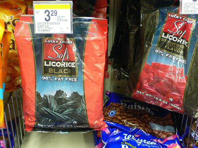
特にアメリカではねじれた棒状の形がポピュラー。たいがい赤と黒の二種類。
そんなリコリスの派生キャラたちと、世界のいろんなリコリス
リコリスたんの仲間2
| 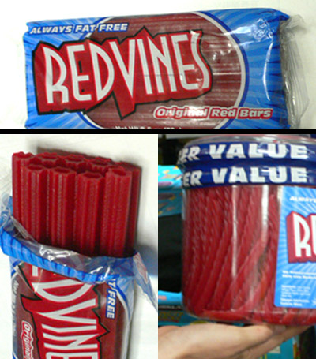 |
レッドヴァインズアメリカンリコリス「REDVINES」 穴が開いていてストローとしても使える（？） |
（original created by だいすけ） |
レッドヴァインズ シスターズアメリカンリコリスらしくチア姿のレッドヴァインコンビ。 性格は多分対照的。 |
{kind=link}
| 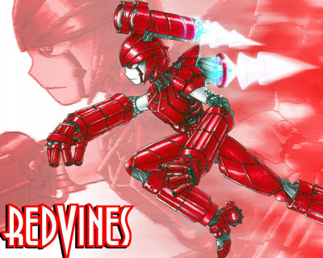 （original created by LeeX） |
レッドヴァインズ (ロボ）あまりに「人工的な味」のレッドヴァインズ。 多分変形する。変形するんじゃないかな。変形するといいな。（乗り物かなんかに） |
{kind=link}
| 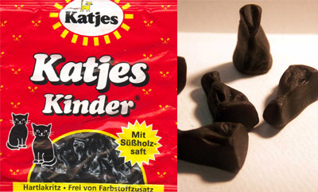 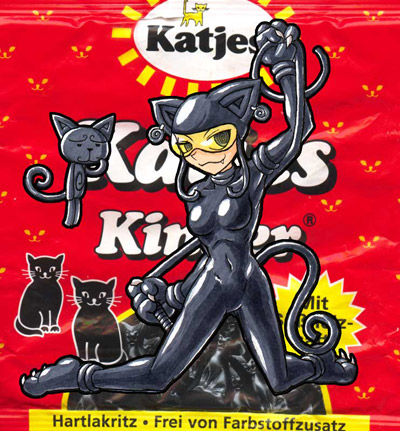 (original created by LeeX） |
ネコリスカッチェス（Katjes）から出ている猫型グミキャンディ。激しくリコリス味。 グミというには硬すぎ。猫型のかわいらしさとはうらはらに、なかなか溶けずにずっとリコリス味を舌の上にキープしつづける恐ろしい黒猫。
|
{kind=link}
{kind=link}
| 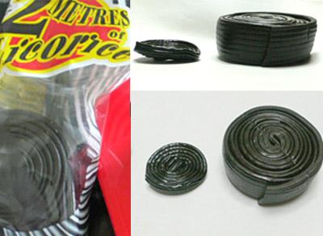 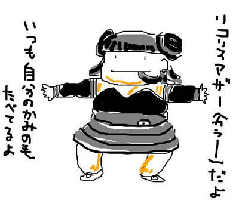 (original created by noen） |
2mリコリスオースオラリアのFynaから出ている「2metres of Licorice」 リコリスマザー特にこれを意識した擬人化ではなかったが、あまりにピッタリすぎるキャラ。リコリスたんのママ。 若い頃のリコリスマザー |
{kind=link}
| 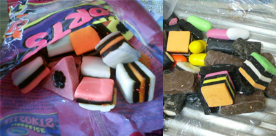 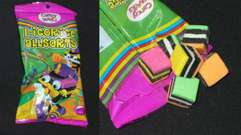 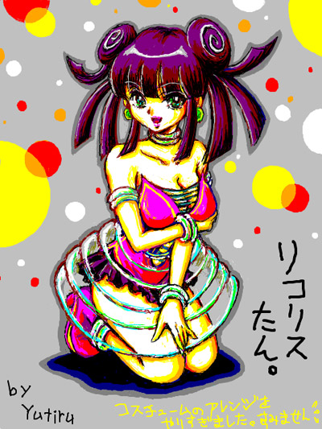 (art by Yutiru） |
Licorice Allsortsリコリスをカラフルな砂糖菓子などでサンドしたAllsort（詰め合わせ）タイプ リコリス以外の菓子の分量によっては、リコリス味が薄まって比較的食べやすい。特にチョコの力は偉大だ。初心者向け？ リコリスたんカラフル仕様 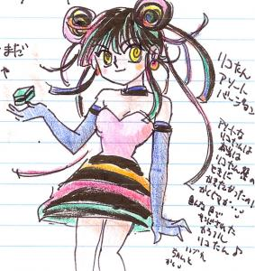 リコリスたんの2段階変化？
|
{kind=link}
| 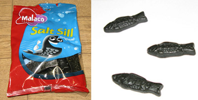 (original created by さかえ） |
Salt SillデンマークのMalaco（MALACOLEAF）から出ている北欧の魚型リコリス。そのまま直訳すれば「塩ニシン」 未食のため味の評価はできないが、こちらに試食レポ（さかえ月光通り）が。 塩ニシンたん（仮） |
| 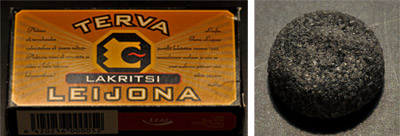 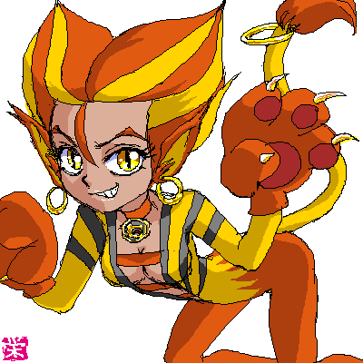 (original created by さかえ） |
Terva LeijonaLakritsi（リコリス）とあるがアルミアッキに近いんじゃないかと思われる。 レイオナたん |
| 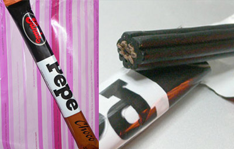 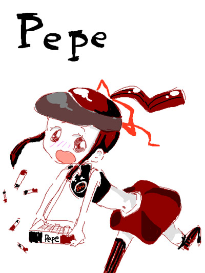 (original created by ^^般若） |
PANDA PEPE LICORICE BARSフィンランドのPandaから出ているちょっぴりキュートなリコリス菓子。 「Pepe salted liquorice」（塩リコリス味）はとても怖そうなんですが・・・ Pepeたんたぶんドジっ娘
|
| 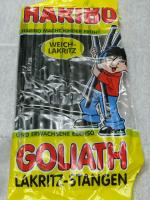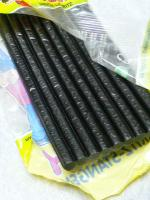 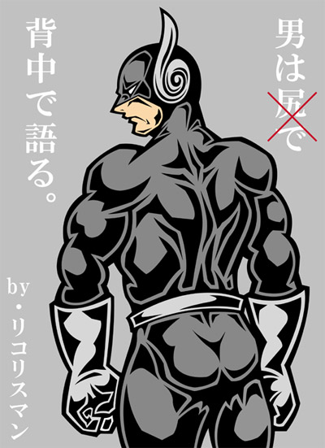 (original created by anri） |
GOLIATH（ゴライアス）うずまき型リコリスを出している「Haribo」の棒形リコリス「GOLIATH」（ドイツ読みならゴリアテ） リコリスマン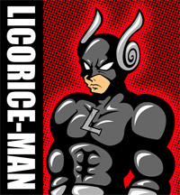 |
{kind=link}
{kind=link}
{kind=link}
{kind=link}
| 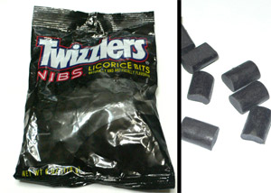 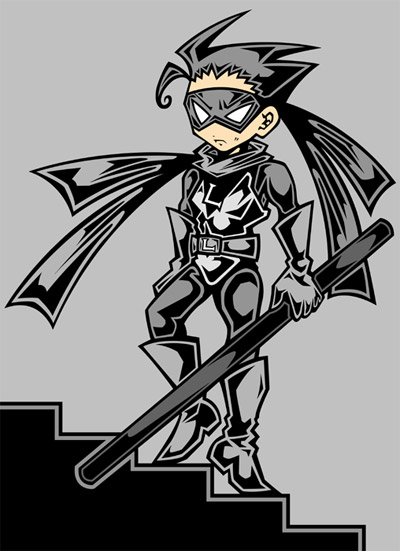 (original created by anri） |
Licorice BITSTwizzlers（ツウィズラーズ：アメリカ）から出ている一口大のリコリス。アメリカでリコリスといえば、このツウィズラーズかレッドヴァインズ。どちらも人工的な味わいのチープ菓子。 ビッツくんリコリスマンのサイドキック（相棒） |
{kind=link}
| 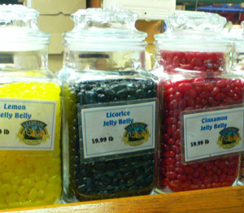 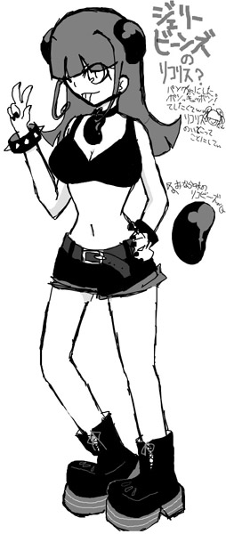 (original created by シーク） |
ジェリービーンズ リコリスジェリービーンズには様々なフレーバーがあるが、リコリス味も存在する。日本ではめったにないがアメリカではメジャーな味の一つ ジェリーたんナイスバディのパンク系ファッションながら、性格は控えめでおとなしい（？）キュートガール。 リコリスたんにセクハラされることが多い。 |
{kind=link}
| 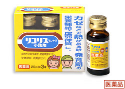 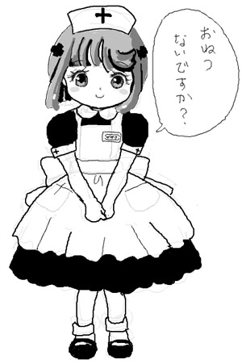 ゼンヤク ナース ゼンヤク エース ゼンヤク ゴールド （※右は茶葉ねえさん） (original created by 海風） |
「ゼンヤク」リコリス医療メーカーゼンヤク（日本） ゼンヤクファミリーゼンヤクのリコリスドリンク擬人化 ■ゼンヤクナースシーダー先生のところに勤めているロリナース。 ■ゼンヤク エース薬剤師さん。いろいろ調合してくれる。 ■ゼンヤク ゴールドチャイナな人。 |
{kind=link}
{kind=link}
| 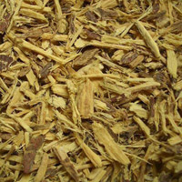 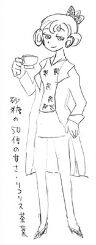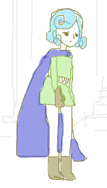 (original created by noen） |
リコリス茶ハーブティーの一種として知られる「リコリス茶」。消炎、鎮痛、咳止めなど様々な薬効がある。 茶葉ねえさん素性不明。 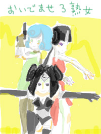 |
{kind=link}
{kind=link}
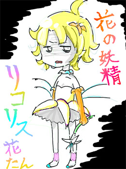 (original created by ^^般若） |
花の妖精 リコリス花たん別名ナツズイセンたん。 別名のとおり、ナツズイセン（夏水仙）の擬人化。夏水仙はヒガンバナの仲間で、ヒガンバナの英名は「リコリス（Lycoris）」。 リコリス菓子のLicoriceとは別種の植物だが、読みが同じなので、なんかまぎれている。 ただ、Licoriceが薬用であるのに対して、Lycoriceには有害な「リコリン」を含む毒草。 |
{kind=link}
| 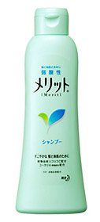 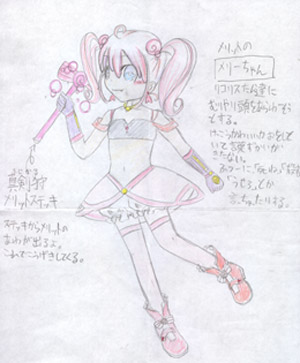 (original created by シーク） |
メリットのメリーちゃんシャンプーの「メリット」。
武器は「真剣狩（まじかる）メリットステッキ」 |
{kind=link}
| 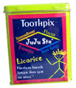 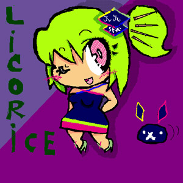 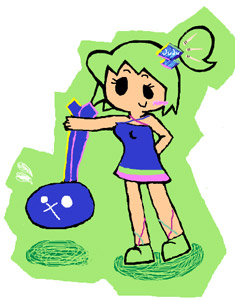 (original created by 侍和ユズ） |
JuJuたん味付き爪楊枝（Flavored Toothpicks）「JuJu Stx」。 そのリコリス爪楊枝擬人化「JuJuたん」 よくわからないお供の小動物といつもいっしょ。 JuJuたん魔女っ子バージョン |
{kind=link}
{kind=link}
{kind=link}
{kind=link}
その他いろんなリコリス
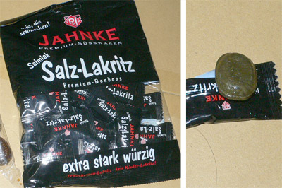 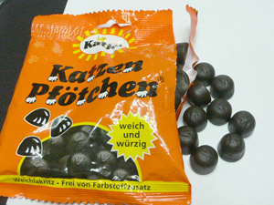 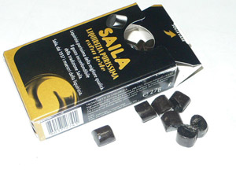 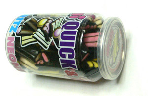 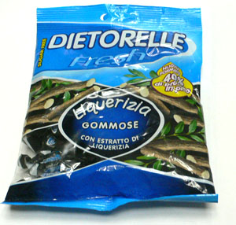 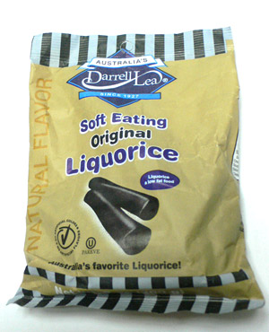
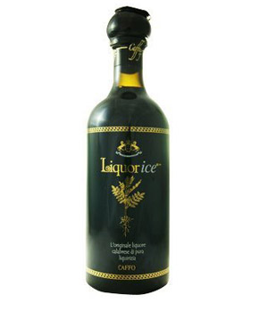
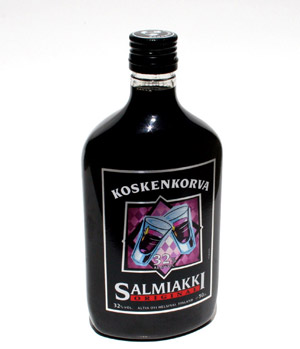 ▼あんまり関係ないリコリス
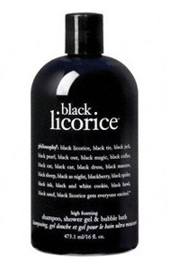
|
{kind=link}